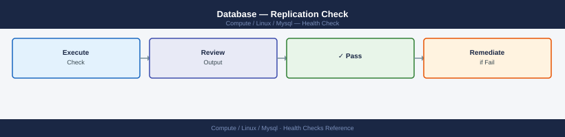

MySQL / MariaDB — Health Checks¶
Before you begin¶
- Access: root or sudo-capable account on target hosts
- Timing: safe to run during business hours unless a step is marked ⚠ (causes interruption)
- Dependencies: no active upgrades or migrations on the same infrastructure
- Logging: capture command output — paste into the change record on completion
Run This Routine¶
Run every morning to confirm the instance is healthy before business hours.
# 1. Service up
systemctl status mysqld
# 2. Connectivity
mysql -u root -e "SELECT 1 AS alive;"
# 3. Active connections vs max
mysql -u root -e "SHOW STATUS LIKE 'Threads_connected'; SHOW VARIABLES LIKE 'max_connections';"
# 4. Blocking queries (anything waiting > 5 min)
mysql -u root -e "SELECT id, user, host, db, command, time, state, info FROM information_schema.processlist WHERE command != 'Sleep' AND time > 300 ORDER BY time DESC;"
# 5. Replication lag (replica only)
mysql -u root -e "SHOW SLAVE STATUS\G" 2>/dev/null | grep -E "Slave_(IO|SQL)_Running|Seconds_Behind_Master"
# 6. Binary log / disk space
df -h /var/lib/mysql
mysql -u root -e "SHOW BINARY LOGS;" 2>/dev/null | tail -5
● mysqld.service - MySQL Server
Loaded: loaded (/usr/lib/systemd/system/mysqld.service; enabled; vendor preset: disabled)
Active: active (running) since Wed 2024-01-17 14:32:18 UTC; 2 days ago
Main PID: 3847 (mysqld)
Tasks: 27 (limit: 4915)
Memory: 512.3M
CGroup: /system.slice/mysqld.service
└─3847 /usr/sbin/mysqld --daemonize --pid-file=/var/run/mysqld/mysqld.pid
alive
1
Variable_name Value
Threads_connected 42
Variable_name Value
max_connections 500
id 1247 user app_user host 10.42.18.9:54821 db production command Query time 847 state Sending data info SELECT * FROM orders WHERE status='pending' LIMIT 1000000
id 1089 user reports host 10.42.18.11:38472 db analytics command Query time 612 state Sorting result info SELECT COUNT(*) FROM events WHERE created_at > DATE_SUB(NOW(), INTERVAL 7 DAY)
Slave_IO_Running: Yes
Slave_SQL_Running: Yes
Seconds_Behind_Master: 0
Filesystem Size Used Avail Use% Mounted on
/dev/sda1 500G 287G 213G 58% /var/lib/mysql
Log_name File_size
mysql-bin.000847 1073741824
mysql-bin.000848 1073741824
mysql-bin.000849 536870912
Common errors
ERROR 1045 (28000): Access denied for user 'root'@'localhost' (using password: NO) — Add -p flag or set MYSQL_PWD environment variable if root requires a password.
ERROR 2002 (HY000): Can't connect to local MySQL server through socket '/var/run/mysqld/mysqld.sock' (2) — Verify mysqld is running with systemctl status mysqld and socket path exists at /var/run/mysqld/mysqld.sock.
Slave_IO_Running: No — Check replica connectivity to primary with SHOW SLAVE STATUS\G and verify network/firewall rules and primary binary logging is enabled.
Pass criteria: service active, connectivity returns 1, no threads blocked >300s, replication lag <30s, disk <80%.
Database — Daily Health Check¶
# PostgreSQL
systemctl status postgresql
psql -U postgres -c "SELECT version();"
psql -U postgres -c "SELECT pg_is_in_recovery();" # true = standby
# MySQL / MariaDB
systemctl status mysqld
mysql -u root -e "SHOW STATUS LIKE 'Uptime';"
mysql -u root -e "SHOW STATUS LIKE 'Threads_connected';"
# SQL Server
systemctl status mssql-server # Linux
# Windows:
Get-Service -Name MSSQLSERVER
-- Instance uptime
SELECT sqlserver_start_time FROM sys.dm_os_sys_info;
-- Active sessions and blocking
SELECT session_id, status, blocking_session_id, wait_type, wait_time/1000 AS wait_sec, text
FROM sys.dm_exec_requests
CROSS APPLY sys.dm_exec_sql_text(sql_handle)
WHERE status != 'background'
ORDER BY wait_time DESC;
-- Database file sizes and free space
SELECT DB_NAME(database_id) AS db_name, name, type_desc,
size * 8 / 1024 AS size_mb,
fileproperty(name, 'SpaceUsed') * 8 / 1024 AS used_mb
FROM sys.master_files;
-- AG replica health (Always On)
SELECT ag.name, ar.replica_server_name, rs.synchronization_state_desc, rs.synchronization_health_desc
FROM sys.dm_hadr_availability_replica_states rs
JOIN sys.availability_replicas ar ON rs.replica_id = ar.replica_id
JOIN sys.availability_groups ag ON ar.group_id = ag.group_id;
# PostgreSQL
psql -h <host> -U <user> -d <dbname> -c "SELECT 1 AS alive;"
# MySQL
mysql -h <host> -u <user> -p<pass> -e "SELECT 1 AS alive;"
# SQL Server
sqlcmd -S <host> -U <user> -P <pass> -Q "SELECT 1 AS alive"
# Port reachability
nc -zv <db-host> 5432 # PostgreSQL
nc -zv <db-host> 3306 # MySQL
nc -zv <db-host> 1433 # SQL Server
alive
-------
1
(1 row)
mysql: [Warning] Using a password on the command line interface can be insecure.
+-------+
| alive |
+-------+
| 1 |
+-------+
(1/1) Checking <db-host> port 5432 (PostgreSQL)...
Connection to <db-host> 5432 port [tcp/postgresql] succeeded!
Connection to <db-host> 3306 port [tcp/mysql] succeeded!
Connection to <db-host> 1433 port [tcp/mssql-s] succeeded!
Common errors
psql: error: could not translate host name "<host>" to address: Name or service not known — Verify the hostname is correct and resolvable with nslookup <host> or dig <host>.
mysql: [ERROR] Access denied for user '<user>'@'<host>' (using password: YES) — Confirm the username, password, and host permissions are correct in the database user grant tables.
nc: connect to <db-host> port 3306 (tcp) failed: Connection refused — Ensure the database service is running on the target host and the firewall allows inbound traffic on that port.
Database — Capacity Monitoring¶
-- Database sizes
SELECT datname AS database,
pg_size_pretty(pg_database_size(datname)) AS size
FROM pg_database ORDER BY pg_database_size(datname) DESC;
-- Table sizes (top 20)
SELECT schemaname, tablename,
pg_size_pretty(pg_total_relation_size(schemaname||'.'||tablename)) AS total_size
FROM pg_tables
ORDER BY pg_total_relation_size(schemaname||'.'||tablename) DESC
LIMIT 20;
-- Index sizes
SELECT indexname,
pg_size_pretty(pg_relation_size(indexname::regclass)) AS index_size
FROM pg_indexes
ORDER BY pg_relation_size(indexname::regclass) DESC LIMIT 20;
# Database data directories
df -h /var/lib/postgresql /var/lib/mysql /var/opt/mssql
# inode usage (log files can exhaust inodes before disk is full)
df -i /var/lib/postgresql
# Identify large files
du -sh /var/lib/postgresql/data/*
du -sh /var/lib/mysql/*
# WAL / binary log space (PostgreSQL)
du -sh /var/lib/postgresql/data/pg_wal/
# MySQL binary logs
du -sh /var/lib/mysql/mysql-bin.*
mysql -u root -e "SHOW BINARY LOGS;"
Filesystem Size Used Avail Use% Mounted on
/dev/sda1 500G 387G 113G 78% /var/lib/postgresql
/dev/sdb1 250G 198G 52G 79% /var/lib/mysql
/dev/sdc1 100G 45G 55G 45% /var/opt/mssql
Filesystem Inodes IUsed IFree IUse% Mounted on
/dev/sda1 32768000 2847291 29920709 9%
4.2G /var/lib/postgresql/data/base
1.8G /var/lib/postgresql/data/global
892M /var/lib/postgresql/data/pg_subtrans
456M /var/lib/postgresql/data/pg_xact
2.1G /var/lib/mysql/ibdata1
1.5G /var/lib/mysql/mysql
987M /var/lib/mysql/performance_schema
47G /var/lib/postgresql/data/pg_wal/
du: cannot access '/var/lib/mysql/mysql-bin.*': No such file or directory
+------------------+----------+
| Log_name | File_size |
+------------------+----------+
| mysql-bin.000142 | 536870912 |
| mysql-bin.000143 | 536870912 |
| mysql-bin.000144 | 268435456 |
+------------------+----------+
Common errors
du: cannot access '/var/lib/mysql/mysql-bin.*': No such file or directory — MySQL binary logging may be disabled; check SHOW VARIABLES LIKE 'log_bin'; to verify if binary logs are enabled.
Permission denied — Run the script with sudo or ensure the user has read permissions on database directories with sudo chmod +r /var/lib/mysql /var/lib/postgresql.
# Weekly snapshots — capture to track growth
psql -U postgres -Atc "SELECT pg_database_size('mydb');" >> /var/log/db-size-mydb.log
# Simple growth rate from log
awk 'NR>1{print ($1-prev)/1024/1024 " MB added since last check"; prev=$1} NR==1{prev=$1}' /var/log/db-size-mydb.log
-- PostgreSQL: reclaim dead tuple space
VACUUM ANALYZE <schema>.<table>;
-- Full reclaim (locks table briefly)
VACUUM FULL <schema>.<table>;
-- PostgreSQL: drop unused indexes
SELECT indexname, idx_scan FROM pg_stat_user_indexes
WHERE idx_scan = 0 ORDER BY pg_relation_size(indexname::regclass) DESC;
-- MySQL: purge old binary logs
PURGE BINARY LOGS BEFORE DATE_SUB(NOW(), INTERVAL 7 DAY);
-- SQL Server: shrink log file (use sparingly — not routine maintenance)
USE mydb;
DBCC SHRINKFILE (mydb_log, 1024); -- 1024 MB target
Database — Replication Check¶

-- On PRIMARY: show connected replicas and lag
SELECT client_addr, application_name, state,
sent_lsn, write_lsn, flush_lsn, replay_lsn,
(sent_lsn - replay_lsn) AS replication_lag_bytes,
sync_state
FROM pg_stat_replication;
-- On STANDBY: confirm it is a replica and check lag
SELECT pg_is_in_recovery() AS is_standby;
SELECT now() - pg_last_xact_replay_timestamp() AS replay_lag;
SELECT pg_last_wal_receive_lsn(), pg_last_wal_replay_lsn();
-- Replication slots — check for inactive slots holding WAL
SELECT slot_name, active, restart_lsn, pg_wal_lsn_diff(pg_current_wal_lsn(), restart_lsn) AS lag_bytes
FROM pg_replication_slots;
# Quick one-liner — show lag and thread status
mysql -u root -e "SHOW SLAVE STATUS\G" | grep -E "Slave_(IO|SQL)_Running|Seconds_Behind|Last_(IO|SQL)_Error"
-- Check GTID position on replica vs primary
SHOW VARIABLES LIKE 'gtid_mode';
SELECT @@GLOBAL.gtid_executed;
SELECT @@GLOBAL.gtid_purged;
-- Compare GTID sets between primary and replica to calculate drift
-- Replica synchronization health
SELECT ag.name AS ag_name,
ar.replica_server_name,
rs.role_desc,
rs.synchronization_state_desc,
rs.synchronization_health_desc,
rs.last_commit_time
FROM sys.dm_hadr_availability_replica_states rs
JOIN sys.availability_replicas ar ON rs.replica_id = ar.replica_id
JOIN sys.availability_groups ag ON ar.group_id = ag.group_id;
-- Database-level lag
SELECT drs.database_id, DB_NAME(drs.database_id) AS db_name,
drs.synchronization_state_desc,
drs.log_send_queue_size AS send_queue_kb,
drs.redo_queue_size AS redo_queue_kb,
drs.last_commit_time
FROM sys.dm_hadr_database_replica_states drs;
# PostgreSQL — compare row counts between primary and replica
psql -h <primary-host> -U postgres -c "SELECT relname, n_live_tup FROM pg_stat_user_tables ORDER BY relname;" > /tmp/primary-counts.txt
psql -h <standby-host> -U postgres -c "SELECT relname, n_live_tup FROM pg_stat_user_tables ORDER BY relname;" > /tmp/standby-counts.txt
diff /tmp/primary-counts.txt /tmp/standby-counts.txt
# MySQL — pt-table-checksum (Percona Toolkit)
pt-table-checksum --host=<primary> --user=root --password=<pass> --databases=<dbname>
# Then on replica:
pt-table-sync --sync-to-master h=<replica>,u=root,p=<pass> --print # --execute to fix
-- Check error
SHOW SLAVE STATUS\G
-- If duplicate key / skip error (use with caution)
STOP SLAVE;
SET GLOBAL sql_slave_skip_counter = 1;
START SLAVE;
SHOW SLAVE STATUS\G
# If replay lag is huge and WAL is no longer available on primary,
# rebuild the replica from a fresh base backup
pg_basebackup -h <primary-host> -U replication -D /var/lib/postgresql/data-new -P -R
# -R writes recovery.conf / standby.signal automatically
pg_basebackup: initiating base backup, waiting for checkpoint to complete
pg_basebackup: checkpoint completed
24601/24601 kB (100%), 1/1 tablespace
pg_basebackup: write-ahead log start point: 0/12000028 on timeline 1
pg_basebackup: write-ahead log end point: 0/12000100 on timeline 1
pg_basebackup: base backup completed
Common errors
pg_basebackup: could not connect to server: FATAL: Ident authentication failed for user "replication" — Verify the replication user exists on the primary and pg_hba.conf allows replication connections from the replica's IP address.
pg_basebackup: directory "/var/lib/postgresql/data-new" exists but is not empty — Remove or rename the existing directory with rm -rf /var/lib/postgresql/data-new before running pg_basebackup.
pg_basebackup: could not create directory "/var/lib/postgresql/data-new": Permission denied — Ensure the postgresql system user owns the parent directory and has write permissions: chown -R postgres:postgres /var/lib/postgresql.
Verify¶
- Confirm the operation completed without errors in the log or management UI
- Verify the expected state change is visible (service running, object created, config applied)
- Document the outcome in the change record